8. Use the kit with your own character
Goal: give a character you already have the kit's crates, enemies and checkpoints (Option A), or the kit's moves as well (Option B), and do the same on a Game Animation Sample (GASP) or ALS-Refactored character.
You need: Unreal Engine 5.3–5.8 with the plugin enabled (pictures: 5.7) and your own character Blueprint. Here that is the Third Person template's BP_ThirdPersonCharacter (Parts 1 and 2), GASP's SandboxCharacter_CMC (Part 3) and ALS-Refactored's B_Als_Character (Part 4). For the Play results a few kit actors were placed in each level (Plugins > Proving Grounds: 3D Platformer Mechanics > Blueprints: BP_Crate, BP_Enemy, BP_CheckpointTrigger, BP_GrindRail). Stop Play before you edit. Which route fits: Recipe 5, Option A, B or C.
Part 1: Option A, keep your character as it is
Your movement, jump, animation, camera and input stay yours; crates, enemies, checkpoints, death and respawn, kill volumes, hazards, pickups and triggers react to the character.
- Open your character Blueprint. In Components click Add, type Corridor Hero and click Corridor Hero.
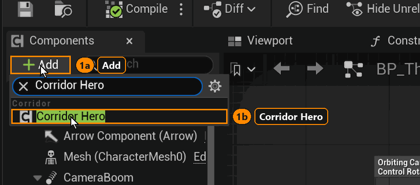
- Click Compile, then save.
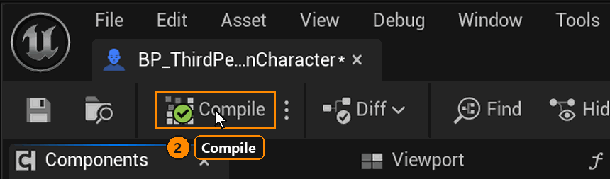
Result: Option A
Click Play and land on a kit crate: it breaks and bounces the character up at 754 cm/s. The Anim Blueprint (ABP_Unarmed) and the camera (FollowCamera) stay the character's own.
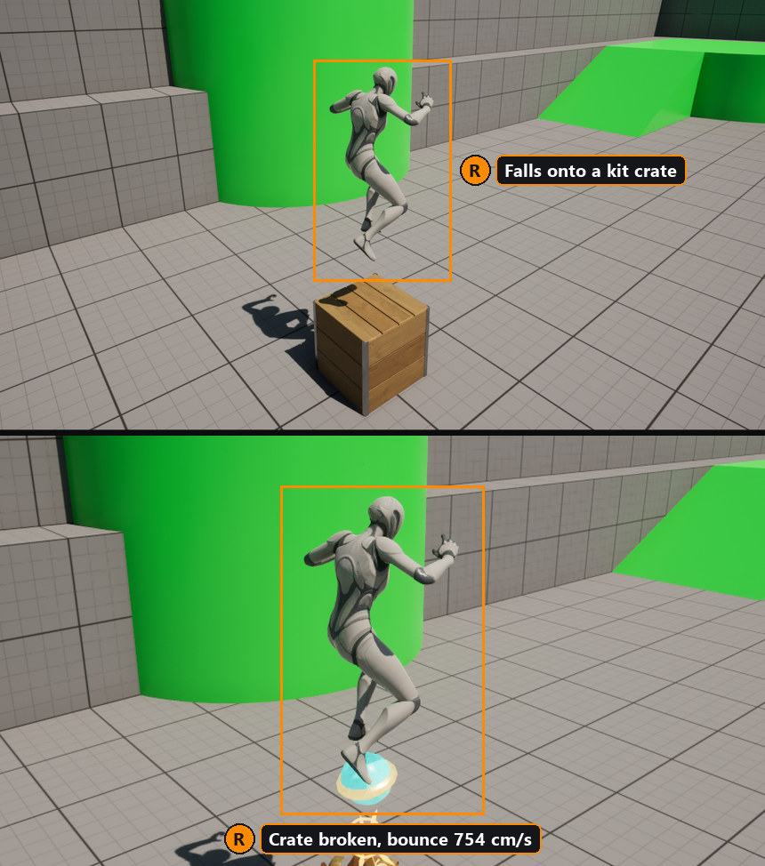
Part 2: Option B, the kit's moves on your character
For characters on the standard Character Movement Component. Start from your character without a Corridor Hero component (Option B has one built in; remove the one from Part 1 first).
- Click Class Settings. In the Details panel open the Parent Class list, type CorridorCharacter and click CorridorCharacter. Your components keep their names; the kit adds its own camera (CorridorCamera on CorridorCameraBoom).
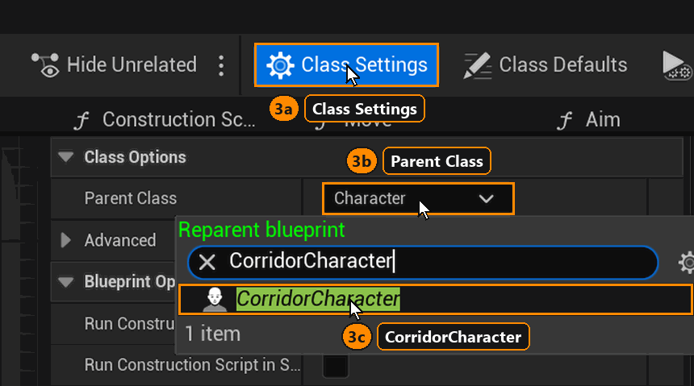
- Click Class Defaults and type Mode in the Details search box. Under Corridor > Integration set Animation Mode, Input Mode and Camera Mode to External: your mesh and Anim Blueprint, your input and your camera stay. Action Slot (default DefaultSlot) is the slot the kit's clips play on; topic 7 shows the Anim Blueprint side.
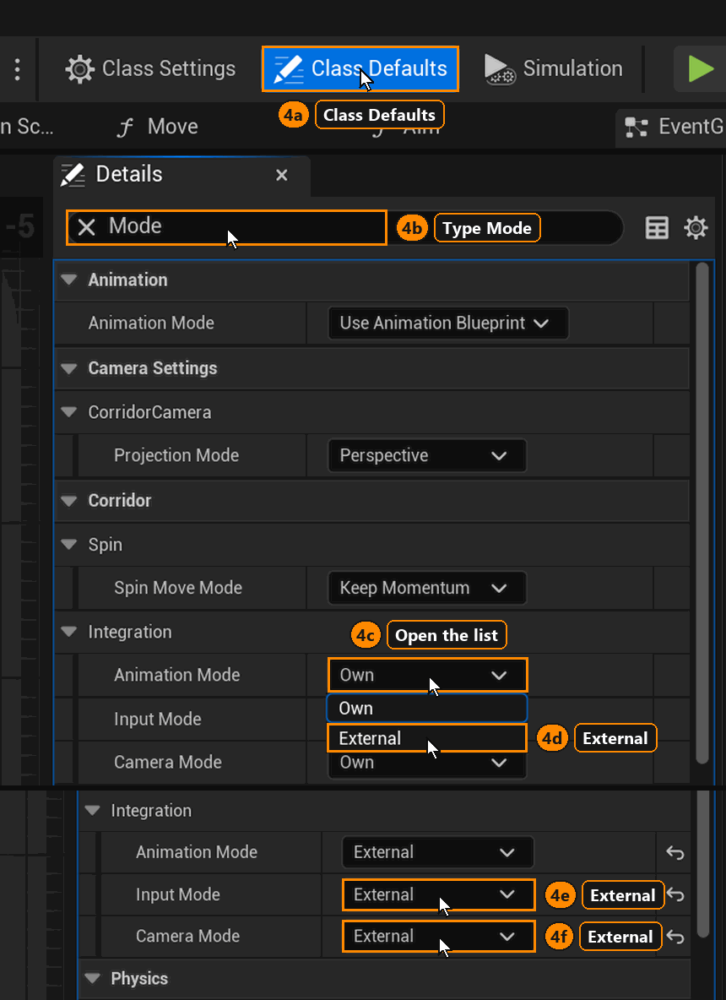
- Click Compile, then save.
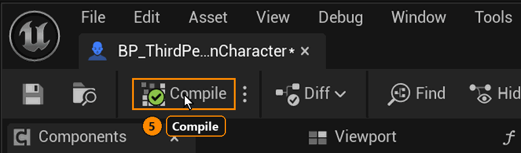
Result: Option B
Click Play and press Jump twice: your own Jump input now runs the kit's jump, and the second press is the kit's double jump (feet 423 cm above the floor at the top). Its clip (MM_Jump of the kit's DA_HeroActions) plays on DefaultSlot of ABP_Unarmed, and FollowCamera stays the active camera.
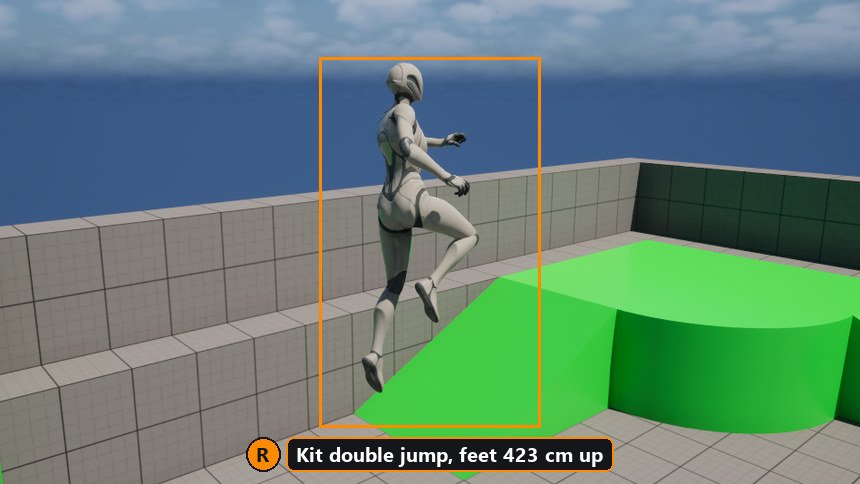
Part 3: GASP, Option A on the Sandbox Character
On GASP use Option A only, on SandboxCharacter_CMC (the Character Movement version, Content > Blueprints): crates, enemy stomps and checkpoints work and motion matching is untouched. The kit's own moves are not supported on the GASP character, and SandboxCharacter_Mover is not supported.
- Open SandboxCharacter_CMC. In Components click Add, type Corridor Hero and click Corridor Hero.
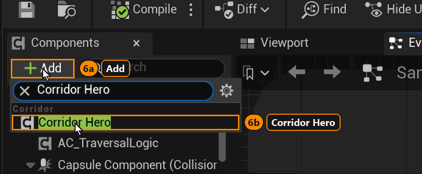
- Click Compile, then save.
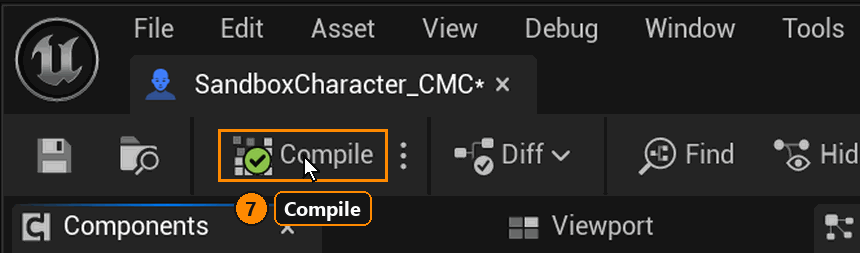
Result: GASP
Click Play. With a checkpoint, an enemy and a crate placed in GASP's DefaultLevel: the checkpoint trigger sets the respawn point, a stomp from above defeats the enemy (bounce 948 cm/s) and the crate breaks and bounces the character (752 cm/s). GASP's motion-matching Anim Blueprint (SandboxCharacter_CMC_ABP) and its own camera stay in charge; the picture is taken from a camera beside the character.
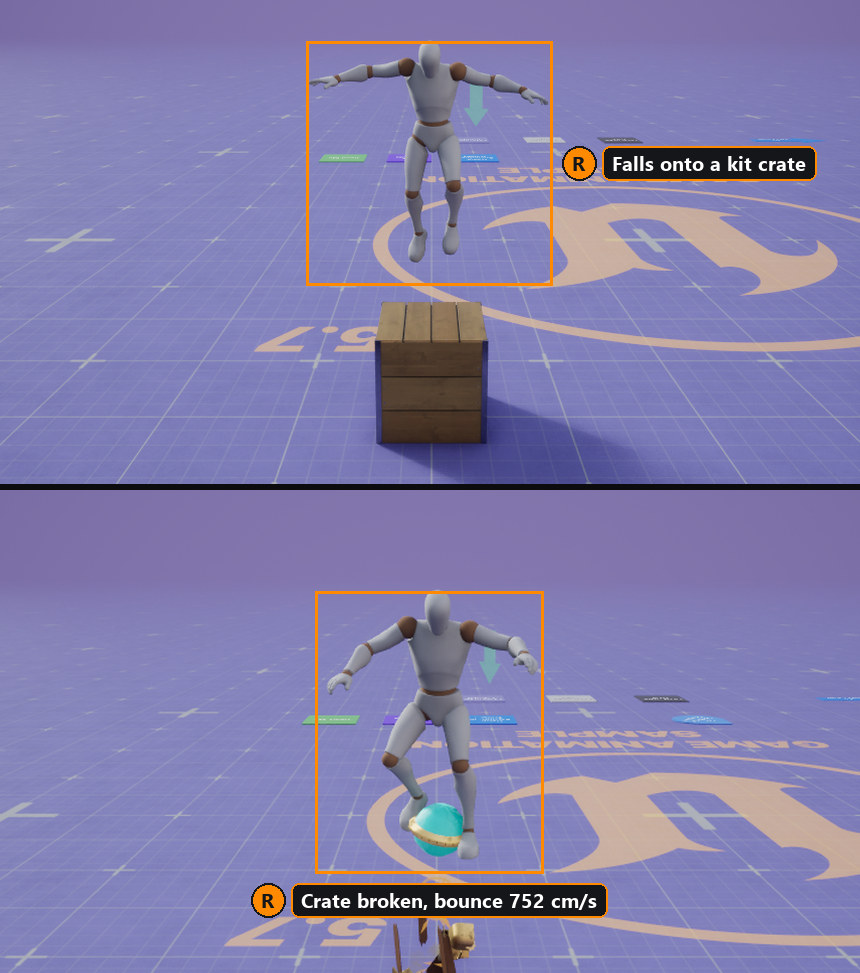
Part 4: ALS-Refactored (Option C)
ALS-Refactored is a C++ plugin, so this route needs a C++ project. The kit ships two sample classes as source in Documentation/Integration/ALS/ (tested with ALS-Refactored tag ue-5.7 on Unreal Engine 5.7). Before the editor steps:
- Copy AlsCorridorMovementComponent.h, AlsCorridorCharacter.h and AlsCorridorCharacter.cpp into your game module's source folder.
- In your module's .Build.cs add
"ALS", "ALSExtras", "EnhancedInput", "PlatformerKit"toPublicDependencyModuleNames. - In Plugins/ALS/Source/ALSExtras give ALS's example character an object-initializer constructor (two lines, exact text in the Quickstart, Option C step 3).
- Build the project and open the editor.
- Open B_Als_Character (ALS plugin content, ALS > Character; Content Browser Settings > Plugin Content ticked). Click Class Settings, open the Parent Class list (it shows Als Character Example), type AlsCorridorCharacter and click AlsCorridorCharacter. Its Character Movement becomes AlsCorridorMovementComponent; mesh, Anim Blueprint (AB_Als), settings and camera stay.
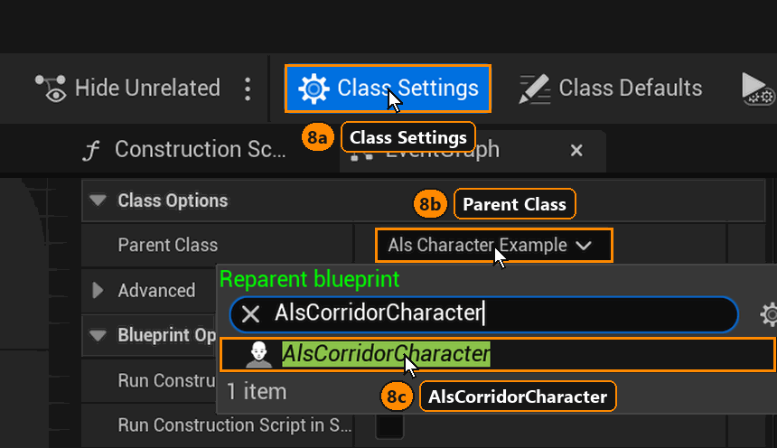
- Click Compile, then save.
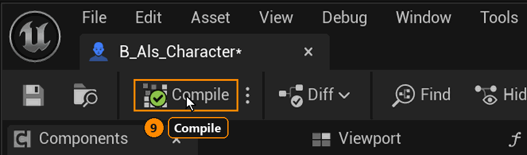
For the slide and spin keys set Corridor > Spin Action / Slide Action in Class Defaults to your Input Actions and add their keys to your Input Mapping Context. Jump stays ALS's Jump: on the ground ALS jumps, in the air it is the kit's double jump.
Result: ALS-Refactored
Click Play. AB_Als keeps animating, ALS jumps 90 cm on its own, and the kit's moves run on top: the double jump rises 211 cm above the press point, the slide takes the walk from 375 to 600 cm/s, the slam drops at 1286 cm/s and breaks a crate, and the character grinds a kit rail at 1029 cm/s (picture taken from a camera beside it). ALS has no grind or slide pose of its own: map Get Hero Traversal and Is Sliding in its Anim Blueprint.
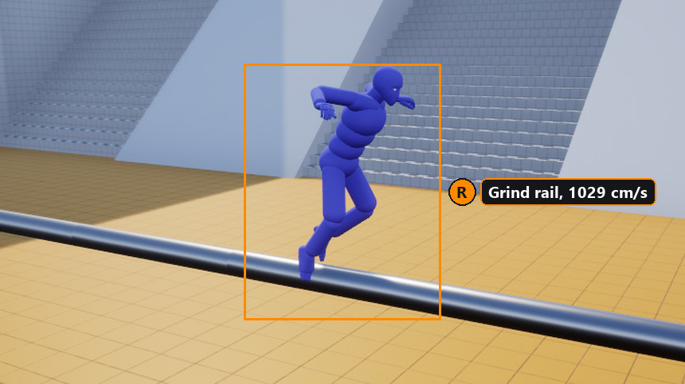
If it doesn't work - Option A: nothing breaks and the enemy does not react: the component sits on another Blueprint than the one your game mode spawns, or the level has no kit actors. - Option B: two Corridor Hero components after the reparent: remove the one you added for Option A. - Option B: the character dies as soon as Play starts: your level lies below -1000 cm or above 6000 cm; change Kill Z / Kill Z Top (Class Defaults > Corridor > Death). - Option B: the kit's clips do not show: your Anim Blueprint needs a Slot node named like Action Slot (topic 7). - ALS: AlsCorridorCharacter is not in the Parent Class list: the project was not rebuilt after copying the three files, or the editor was opened before the build finished.
See also: Quickstart, Integrate with your own character · Recipe 5 · topic 7, your own Anim Blueprint